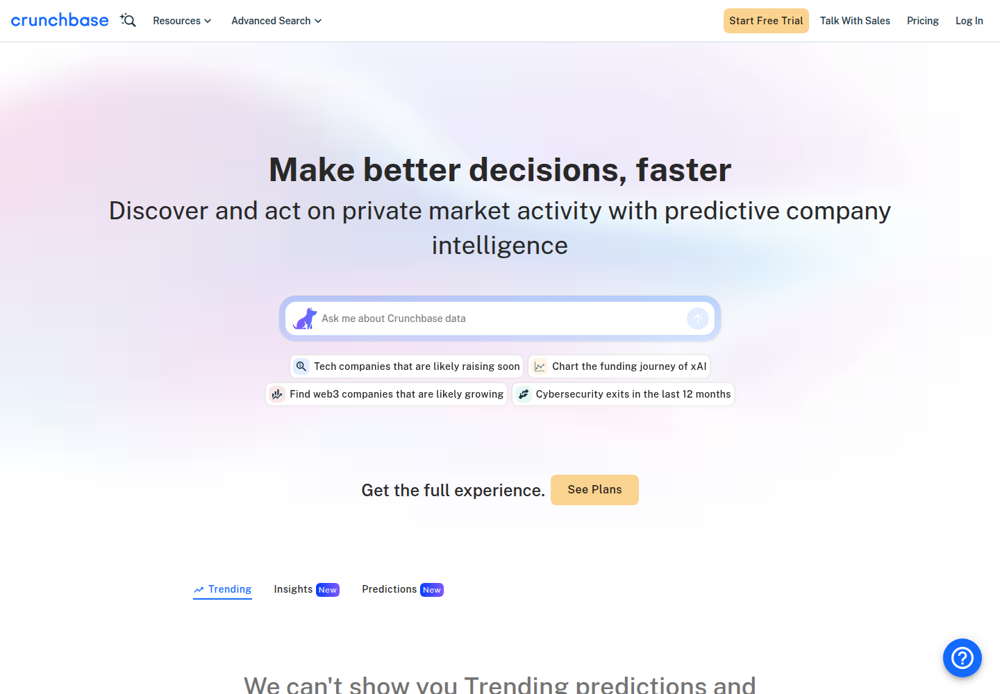
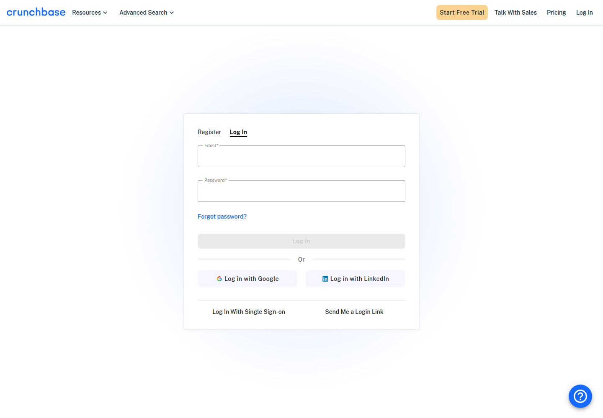
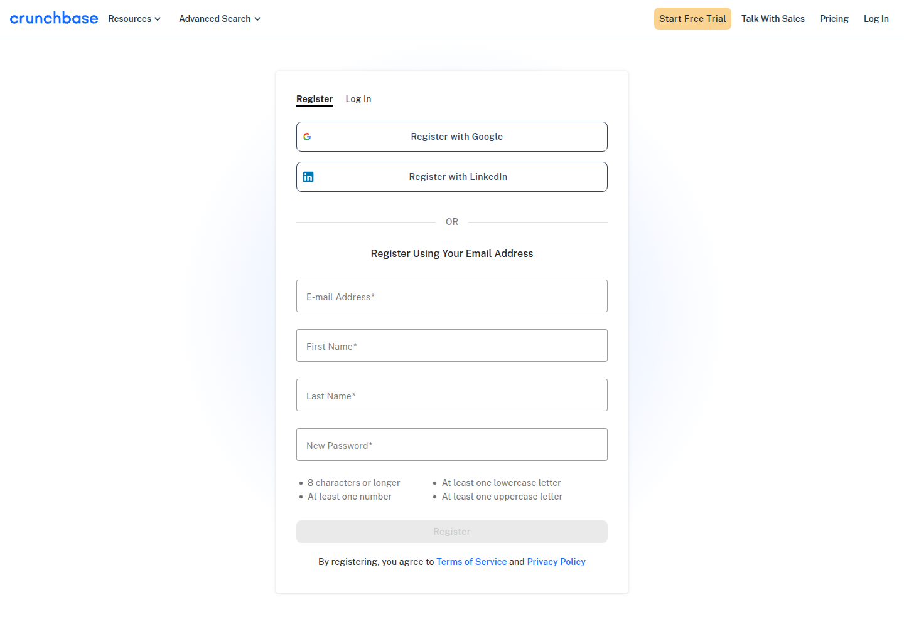

Profile
- Company
- Crunchbase
- Url
- https://www.crunchbase.com/
- Source Category
- Capital & discovery marketplaces
- Research Status
- Deep Cited Research / Draft Complete
- Current Status
- live - active private-company data and predictive-intelligence platform.
- Founded Launch Year
- 2007
- Company Age
- 19 years
- Hq Country
- United States
- Operating Area
- global private-company data platform; remote-first company
- Target Users
- investors, GTM teams, analysts, product/API teams, wealth managers, entrepreneurs/founders
- Product Category
- private company database, predictive intelligence, investor/company discovery, API/data licensing
Product Flows
- Swipe Card Interface
- no
- Mutual Match
- no
- Ai Matching Scoring
- yes - AI Search Builder/predictions/investor matches
- Ai Deck Scoring
- no
- Founder To Founder Flow
- no
- Founder To Investor Flow
- yes - investor discovery and search, not a transactional marketplace
- Project Profiles
- yes - company and investor profiles
- Messaging Collaboration
- yes - homepage exposes Search/Send Message CTA; collaboration details require product access
- Mobile App
- not found
- Web App
- yes
Security & Documents
- Nda Gated Unlock
- no
- Data Room
- no
- E Signature
- no
- Meeting Prep Ai Briefing
- not found
Pricing, Funding & Traction
- Pricing Model
- subscription SaaS; Pro monthly support article lists $99/month; Business/API/Enterprise are sales-led
- Business Model
- subscriptions, API, data licensing, enterprise private-market intelligence
- Total Funding
- not found in accessible primary; secondary LinkedIn says 5 rounds and last round $50M
- Funding Rounds
- secondary: 5 total rounds; official blog verifies a $30M Series C led by OMERS Ventures
- Investors
- OMERS Ventures, Emergence, Mayfield, Cowboy Ventures, Verizon Ventures; secondary also lists Alignment Growth
- Funding Source Type
- venture-backed
- Last Funding Date
- 2022-08-20 per secondary LinkedIn; official accessible source for latest date not found
- Users Traction
- 80M+ user engagement signals; 4M+ private companies; 30M+ verified data updates annually; homepage snapshot showed 13,055,715 new predictions
- Deals Funding Facilitated
- Not a funding facilitator; provides data/predictions.
- Partnerships
- not found
- Media Coverage
- G2 pricing/reviews used as secondary pricing corroboration.
- Product Update Activity
- active; 2026 product updates include market maps, funding predictions, exit time horizons and competitor signals
- Acquisition Rebrand History
- created in 2007 as part of TechCrunch; spun out of AOL/Verizon and TechCrunch in 2015
Scores
- Product Overlap Score
- 4
- Feature Maturity Score
- 3
- Market Traction Score
- 3
- Funding Strength Score
- 3
- Ai Depth Score
- 3
- Nda Security Strength Score
- 4
- Network Moat Score
- 3
- Direct Threat Score
- 3.4
- Source Confidence
- High for product; Medium for corporate funding due to secondary-source reliance
Evidence Notes
- Primary Sources
- https://about.crunchbase.com/about-us
https://www.crunchbase.com/
https://about.crunchbase.com/data
https://about.crunchbase.com/products/crunchbase-pro
https://about.crunchbase.com/products/crunchbase-api
https://support.crunchbase.com/hc/en-us/articles/360001618747-Is-there-a-monthly-subscription-option-for-Crunchbase-Pro
https://about.crunchbase.com/product-updates
https://about.crunchbase.com/blog/crunchbase-series-c - Secondary Sources
- https://www.linkedin.com/company/crunchbase
- Unsupported Claims
- No verified source found for data rooms, e-signature, NDA gating, mobile app, AI deck scoring, or full total company funding.
- Contradictions
- Search/tracker snippets previously conflated Crunchbase market-data article values with Crunchbase corporate funding; ignored as unsupported.
- Last Checked
- 2026-07-19
- Notes
- High discovery/data overlap, low direct workflow overlap with BizMatch transaction/matchmaking.
Registration Flow
Research date: 2026-07-19. Screenshots are sanitized public copies from the private registration-flow capture set; credentials, tokens, verification links/codes, browser chrome, and private identifiers are not intentionally published.
Outcome: stopped at required truthful-details / submission boundary.
Stop point: Blank Crunchbase email registration form, before entering personal data, submitting Register, creating an account, or requesting email verification
Blocker / boundary: The direct registration form requires truthful first and last names in addition to the authorized email address and site-specific password, but the authorized registration credential file supplies no first or last name. Proceeding would require inventing or independently supplying identity data outside the card's authorized credentials.
- Official public homepage. Crunchbase's official homepage presents private-market intelligence and exposes Start Free Trial, Pricing, and Log In entry points. The Log In route was used to locate the free registration flow without entering a paid-plan path.
- Authentication entry. The official /login page presents Register and Log In tabs. Its login form requires Email and Password and also offers Google, LinkedIn, single sign-on, and email login-link alternatives.
- Email registration form. Selecting Register opens the official /register page. Direct registration requires E-mail Address, First Name, Last Name, and New Password. The password must be at least 8 characters and contain at least one number, one lowercase letter, and one uppercase letter. Google and LinkedIn registration alternatives are also shown, and registering constitutes agreement to Crunchbase's Terms of Service and Privacy Policy.


